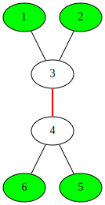

ABCDEFGHIJK
SEERC 2018
Overview
| Status | A | B | C | D | E | F | G | H | I | J | K |
|---|---|---|---|---|---|---|---|---|---|---|---|
| Contest | (8) | 2:43 | 0:55 | (2) | 0:30 | (2) | 3:26 | 3:09 | |||
| Attempt | *9 | + | +1 | *4 | +2 | *2 | +4 | * | + | *4 | |
| AC count | 7 | 88 | 93 | 6 | 119 | 33 | 15 | 18 | 66 | 15 | 17 |
| Tag | 暴力 | 数学 | BFS | set | 构造 | 线段树 | 随机 | 最短路 | |||
| Coding | 2639 | 1508 | 2009 | 1282 | 880 | 2328 | 1198 | 1708 | 850 | 3087 | ? |
| Thinking | Mid | Easy+ | Easy | ? | Easy | Mid- | Mid- | Mid+ | ? | Easy | ? |
| Stars | ★ | ★ | ★ |
注：$\mathcal O$ 表示口头通过。
- Solved during contest:
5/11 - Upsolved:
10/11 - Orally upsolved:
10/11 - Rank:
34/155
Contest Materials
Statements
Editorial by NPU_SXY (10/11)
Editorial by Calabash) (8/11)
Editorial by BUAA Nonsense Time) (11/11)
Replay
yd & wzk onsite, cyy remote
感觉这次比赛出的锅有点多啊，这里列出来以供警示：
- 开始：wzk E 题忘记排序，用 cin/cout 导致 TLE
- 中前期：wzk 花费较多时间做 A ，结果惨遭 WA on 61，yd B 题推式子推得时间过长，两人均没有看其它题。
- 中后期：wzk G 题数组开小导致莫名 TLE
- 后期：yd F 题写炸，导致有好几个可做题来不及写。
Tutorials
Easy: B, C, E
Mid Easy: F, G, I
Prob A.
Prob B. 数学公式
Solved by YangDavid at 02:43 (+)
Description
经过转换：圆上有 $n$ 个点，标号依次为 $1,2,\ldots,n$ 。问有多少个无序三元组 $(i,j,k)$，使得按这三个编号取出的点不三点共线，并且连接成的三角形包含圆心？（三角形边界经过圆心也算包含圆心）
Solution
不妨设 $i<j<k$ ，令：
$$
\begin{aligned}
x_1 &= j - i\\
x_2 &= k - j\\
x_3 &= (n+i) - k
\end{aligned}
$$
则：
$$
x_1 + x_2 + x_3 = n \text{ } (1 \leq x_i \leq \lfloor\frac n2 \rfloor)
$$
如果三者两两相等，显然 $n$ 需要是 3 的倍数，对应的 $(i,j,k)$ 一共有 $\lfloor \frac n3 \rfloor$ 种。
否则，由于 $x_1,x_2,x_3$ 具有循环同构性，我们要计数的是 $x_1$ 最小，且 $x_1 \neq x_3$ 的有序三元组 $(x_1,x_2,x_3)$ 的数量，然后再乘上 $n$ 。这个结果可以用以下求和表示：
$$
\sum_{a=1}^{\lfloor \frac n3 \rfloor} \sum_{\max(a,n-\lfloor\frac{n}{2}\rfloor-a)}^{\min(\lfloor\frac n2\rfloor, n-2a-1)} 1
$$
这个式子有两个分界点：
$$
\begin{aligned}
t_1 &= \lfloor\frac{n-1-\lfloor\frac{n}{2}\rfloor}{2}\rfloor \\
t_2 &= \lfloor \frac{n- \lfloor\frac n2 \rfloor}2 \rfloor
\end{aligned}
$$
分段等差数列求和即可。注意对 $2^{64}$ 取模，要用 unsigned long long。
Code
1 | /* |
Prob C. BFS
Solved by YangDavid at 00:55 (+1)
Description
$n$ 个点的树，节点被染成了白色黑色。要求从中选取 $m$ 个黑节点，使得它们两两距离最大值最小。
数据范围：$n,m\leq 100$
Solution
感觉这是有史以来做过的最有趣的签到题。这道题有很多种做法，这里提供一种不用二分，复杂度 $O(n^2)$ 的做法。
首先选取的黑色节点在黑节点的虚树上一定是同一个联通分量，因此也组成一棵树。我们考虑枚举这棵树的重心，从重心出发开始 BFS，记录在达到 $m$ 个黑点时距离最远和次远的点的位置，然后相加，更新答案。
但是这么做有一个非常 tricky 的地方，考虑下面这个图，绿色点是黑色点，而红色边才是真正的重心！

因此我们枚举重心不仅要枚举点，也要枚举边！但是复杂度仍然是 $O(nm)$ 的。
Code
1 | /* |
Prob D.
Prob E. 容易题
Solved by nocriz at 00:30 (+2)
Prob F. 构造
Upsolved by YangDavid (+4)
Description
给你 $a,b$ 两个长度为 $n$ 的序列，问能否经过 $2n$ 次以内的下面两种操作操作，将 a 变成 b：
- 选定 $[l,r]$ ，将 $a[l],\ldots,a[r]$ 替换为区间 $[l,r]$ 最大值；
- 选定 $[l,r]$ ，将 $a[l],\ldots,a[r]$ 替换为区间 $[l,r] $ 最小值；
Solution
一个显然的事实是不断找 b 中相邻且相同字母，去掉其中一个，这么操作得到的序列如果是 a 的子序列的话，就是可行的，否则无法构造。
构造分为两步，明天再详细阐述。
Code
1 | /* |
Prob G. 线段树
Solved by hdmmblz & nocriz at 03:26 (+4)
Prob H. 随机化 or 构造
Upsolved by hdmmblz, YangDavid
Description
有 $m$ 个愿望，形式是 $i$ 号人想让 $j$ 号人不高兴。一个人高兴当且仅当他至少有一个愿望被满足了。你要构造方案使得至少 $\displaystyle \lfloor \frac m4 \rfloor + 1$ 个愿望被满足
Solution 1
直接随机每个人是否开心，期望就是 $m/4$ 个愿望被满足。不断随机，符合题意就输出，否则继续随机即可。
1 |
|
Solution 2
构造性做法，由 mnbvar 提出。
首先解决这个问题：$n$ 个点，$m$ 条边的无向图，给点黑白染色，构造方案使得两端点不同色的边的数量严格大于 $\frac m2$ 。做法就是每个联通分量分别处理，任选两个点分别染成黑白，然后开始 DFS 邻居节点，一个节点如果周围黑节点多，就染成白色；白节点多就染成黑色。如此染色，对于每个节点，不同色的边数量都严格大于度数的一半，因此这种构造是有效的。
然后回到原问题。原问题按无向图跑一遍上面的算法，检验，如果不行的话把黑白染色互换，再检验则一定可以找到解。因为这两种方法的满足的愿望数之严格大于 $\frac m2$
1 | /* |
Prob I.
Solved by hdmmblz at 03:09 (+)
Prob J. 最短路
Upsolved by YangDavid
Description
给出一张图，$n\le10^5$个节点，$m\le10^5$条边。
有只兔子和乌龟在赛跑，每条边乌龟和兔子各有一个需要的时间。
乌龟要经过的边按顺序给出，并且乌龟每当走过一条边，就会睡一段时间，每条边的这个时间也给出。
兔子要经过的边按顺序给出，兔子可能作弊，在某个点改变下一个目标点，之后一直走最短路。
当兔子开始作弊时，乌龟如果没有睡觉，则立即就会发现，否则它睡醒后立即会发现，乌龟一旦发现兔子作弊，之后都不会再睡觉。
如果乌龟和兔子同时到达算兔子赢。
问从哪些点开始作弊（要求改变目标点，且使得最短路严格变短），可以获胜。
（抄的是北航的题解。）
Comment
模拟题意即可。思博题，细节巨多，题意不清，体验极差。